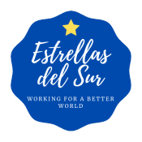

Marco para la integración efectiva del principio de igualdad de trato y oportunidades entre mujeres y hombres en la organización y en sus actividades.
La Asociación Cultural Estrellas del Sur, en coherencia con sus principios fundacionales y su compromiso con el desarrollo integral de la juventud, considera la igualdad de trato y de oportunidades entre mujeres y hombres como un elemento esencial para la consecución de sus fines.
El presente Plan de Igualdad se configura como un instrumento estratégico destinado a garantizar la integración efectiva del principio de igualdad en el conjunto de la organización, tanto en su estructura interna como en el desarrollo de sus actividades, especialmente las vinculadas a la movilidad internacional, la educación no formal y la participación juvenil.
Las entidades del Tercer Sector desempeñan un papel fundamental en la construcción de sociedades más justas, inclusivas y cohesionadas. En este contexto, las asociaciones juveniles con proyección internacional, como Estrellas del Sur, tienen la responsabilidad de promover valores de igualdad, diversidad e inclusión en todos sus ámbitos de actuación.
A pesar de los avances normativos, persisten desigualdades estructurales que afectan al acceso, la participación y el desarrollo de las personas en función del género. Por ello resulta imprescindible adoptar medidas específicas que permitan eliminar dichas desigualdades y avanzar hacia una igualdad real y efectiva. Este Plan de Igualdad responde a esa necesidad, incorporando la perspectiva de género de manera transversal y alineándose con la normativa vigente y con los programas europeos de juventud.
La Asociación Cultural Estrellas del Sur nace en 2020 en Córdoba, de la iniciativa de un grupo de jóvenes que, tras participar en experiencias internacionales de aprendizaje, decidieron crear un proyecto colectivo orientado a generar nuevas oportunidades para otras personas. Constituida como entidad sin ánimo de lucro, su objetivo es facilitar el acceso a proyectos internacionales, especialmente a quienes encuentran mayores dificultades para participar.
Además de facilitar la participación en programas de movilidad, la entidad desarrolla acciones de sensibilización para promover la igualdad de oportunidades, la inclusión social, la interculturalidad y la ciudadanía activa, actuando como agente de transformación social en Córdoba y Andalucía.
Reducir las desigualdades en el acceso a las oportunidades europeas y garantizar que cualquier persona joven, con independencia de su contexto social, económico o personal, pueda beneficiarse de experiencias de movilidad, formación y voluntariado internacional, prestando especial atención a jóvenes con menos oportunidades y acompañándolas durante todo el proceso.
Consolidarse como un referente andaluz en movilidad juvenil y educación no formal, con un modelo de intervención basado en la equidad, la inclusión y la calidad, y proyectar su acción hacia un futuro en el que la juventud sea agente activo de cambio, comprometida con los valores democráticos, la igualdad y la solidaridad.
Estrellas del Sur se rige por una Asamblea General como órgano soberano y una Junta Directiva responsable de la gestión y la representación de la entidad.
Integrar de forma efectiva el principio de igualdad de género en todos los niveles de la organización, promoviendo un cambio estructural que garantice la igualdad de trato y de oportunidades en su funcionamiento interno, en sus políticas y en su cultura organizativa, e incorporando de manera transversal la perspectiva de género en el diseño, ejecución y evaluación de los proyectos de movilidad internacional y educación no formal.
De forma complementaria, el plan se alinea con los Objetivos de Desarrollo Sostenible de la Agenda 2030, en especial:
Al final del periodo de implantación del plan se realizará su evaluación atendiendo a si ha sido eficaz, si la situación de partida ha mejorado y si se han cumplido los objetivos previstos. Para ello se parte de una evaluación inicial que sirve de referencia y permite un seguimiento continuo a lo largo de toda la implementación.
La Ley Orgánica 3/2007, de 22 de marzo, para la igualdad efectiva de mujeres y hombres, constituye el principal marco jurídico en España para garantizar y promover la igualdad en todos los ámbitos de la vida social, económica, cultural y política. Su finalidad es avanzar desde la igualdad formal hacia una igualdad real y efectiva, eliminando los obstáculos a la plena participación de las mujeres.
"Hacer efectivo el derecho a la igualdad de trato y de oportunidades entre mujeres y hombres, en particular mediante la eliminación de la discriminación de la mujer, en todos los ámbitos de la vida y, especialmente, en las esferas política, civil, laboral, económica, social y cultural." (artículo 1)
La Ley se fundamenta en los artículos 9.2 y 14 de la Constitución Española e introduce principios clave como la igualdad de trato (ausencia de toda discriminación directa o indirecta por razón de sexo), la presencia equilibrada en los ámbitos de decisión, la prevención del acoso sexual y por razón de sexo, y la inversión de la carga de la prueba en los casos de discriminación.
En su Título IV regula los Planes de Igualdad. Estos son obligatorios para empresas de más de 250 personas trabajadoras o cuando lo establezca el convenio colectivo o la autoridad laboral, y voluntarios para el resto de entidades, como es el caso de las asociaciones como Estrellas del Sur, que los adoptan como herramienta de mejora organizativa y compromiso social. La norma incorpora además medidas de conciliación y corresponsabilidad: permisos y excedencias, flexibilización de la jornada, protección durante el embarazo y la lactancia y ampliación del permiso de paternidad.
La Asociación Cultural Estrellas del Sur, aun no estando obligada legalmente por su tamaño, asume de manera voluntaria los principios y disposiciones de la Ley Orgánica 3/2007, integrándolos en su funcionamiento interno y en el desarrollo de sus actividades. A través del presente Plan de Igualdad, la entidad reafirma su compromiso con la construcción de una organización más justa, inclusiva y equitativa, contribuyendo activamente a una sociedad basada en la igualdad real de oportunidades.
Datos identificativos